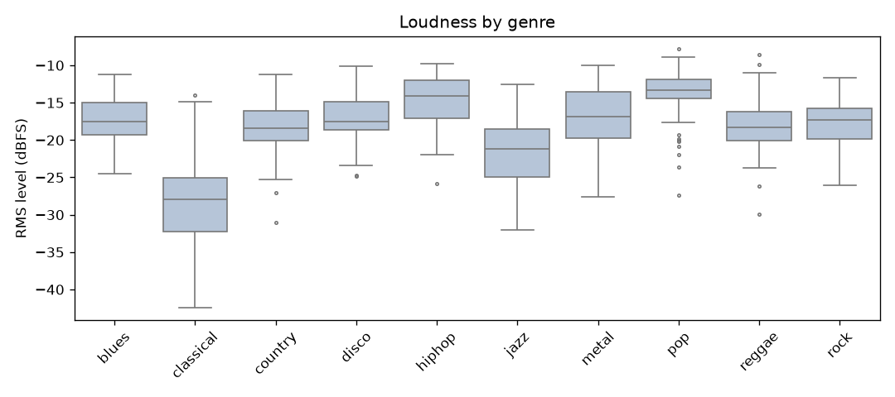
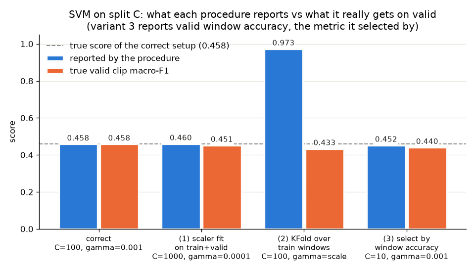
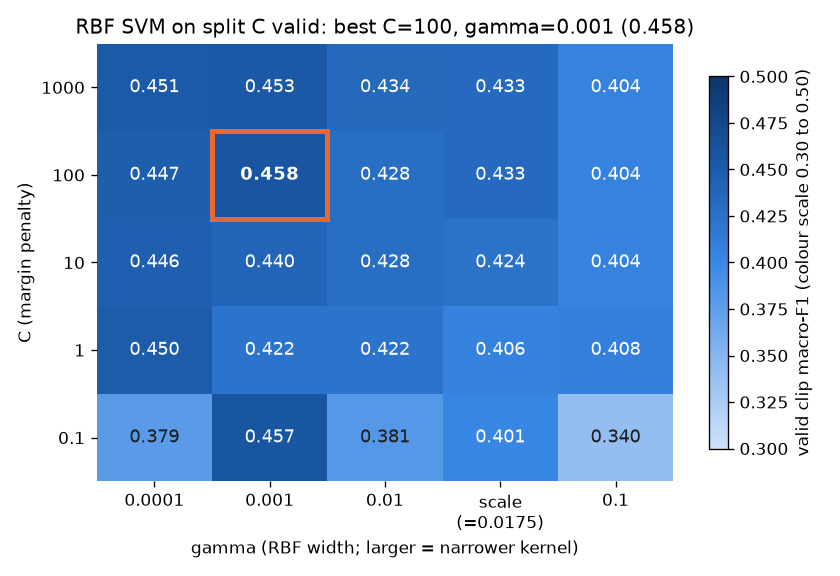
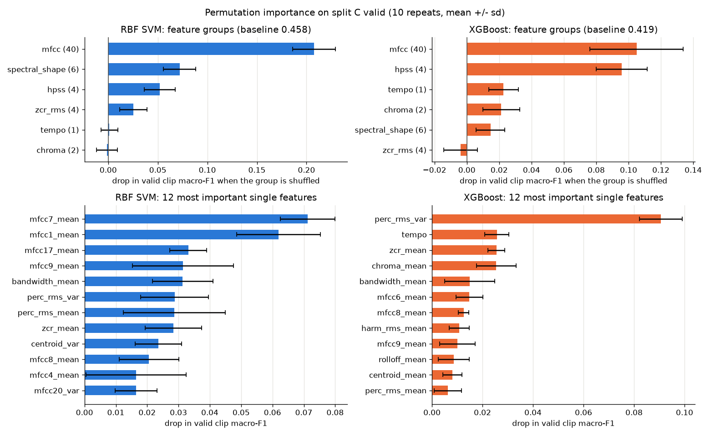
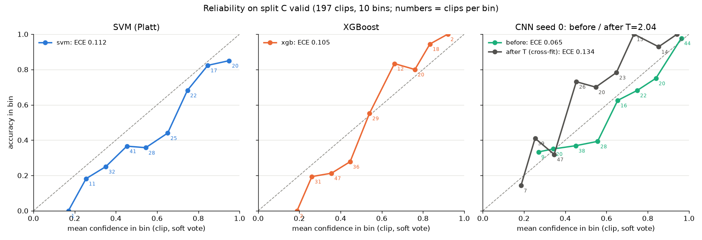

The question, and what one row is
Question. How well can a model predict a 30-second clip's genre from the audio alone, and how much of that accuracy survives when the test set contains no artist the model heard in training?
One row. We predict one 30 s clip (the unit of every reported score). A model trains on one 3 s window of audio with its clip's genre as the label: 10 rows per clip, so 4,420 training rows from 442 training clips. All ten windows of a clip always stay in the same part, so a clip is never split between train and test.
At prediction time the model receives only the clip's 30 s of audio. The artist, the file name (which contains the genre) and every other piece of metadata are never inputs; artists are used only to build the splits and the confidence intervals.
Why it matters. GTZAN, the standard dataset for this task, has several clips per artist and some repeated recordings. A random split can reward recognising a performer instead of a genre. This page measures that gap.
Where it would be used. Streaming services tag new songs by how they sound, most usefully for new artists nobody has listened to yet (the "cold-start" case). That only works if the model recognises genre in artists it has never heard, which is what split C tests. We do not build a recommender: a macro-F1 near 0.55 would be one weak signal among many.
In plain words
If the same singer appears in the practice questions and the exam, a student can pass by memorising the voice without learning what "jazz" sounds like. We ask how well the model does when the singers in the exam are new.
The answer in one number
The light band is the 95% interval. "Leaky split A" is the same CNN (trained on the training part only) tested on windows whose clips it also trained on.
Data
GTZAN (Tzanetakis & Cook, 2002): 1,000 clips of 30 s, 100 per genre, 22,050 Hz mono, in 10 genres: blues, classical, country, disco, hip-hop, jazz, metal, pop, reggae and rock. It comes from a Kaggle mirror (a free Kaggle account is needed). The clips are cut from commercial recordings, so we publish only numbers, clip ids and figures, never the audio.
Size and key variables
| Variable | What it is |
|---|---|
| Clip (1,000 files; 999 readable) | 30 s of audio at 22,050 Hz mono, about 660,000 samples. Clip length varies by under 0.7 s. |
| Genre (target) | One of 10 labels, 100 clips each (99 for jazz, because one file is unreadable). |
| Artist (grouping variable) | 321 distinct artist names from gtzan-bind; 14 clips have no artist label. Genres differ a lot: from 14 artists (blues) to 62 (disco) per 100 clips. Used only to build splits and bootstrap intervals, never as a model input. |
| Window (training row) | A 3 s slice. For the classical models: 57 handcrafted numbers (20 MFCC means and variances, chroma, spectral shape, zero-crossing rate, loudness, harmonic/percussive energy, clip tempo). For the CNN: a 128-band log-mel image. |
| Split part | train, valid or test, assigned per clip. Split C has 442 / 197 / 290 usable clips. |
Quality issues
Each issue below lets a model score by recognising audio it has already heard; the splits in Method remove them one at a time.
- Exact duplicates: 14 groups of clips have byte-identical audio (for example metal.00034 and metal.00094), so a random split can put one copy in train and the other in test.
- Faults found by listening (Sturm, 2013): the same song in several clips, wrong genre labels and distorted clips. Removing them leaves 929 usable clips for splits B′ and D.
- Many clips per artist: a random split puts the same artist, sometimes the same recording, on both sides. This is the leakage the page measures. Artist names are matched automatically (gtzan-bind), and credits sharing a performer ("Bob Marley & The Wailers", "Bob Marley") count as one artist cluster.
- Uneven lengths: 29.93 s to 30.65 s (nine clips under 30 s). We pad or trim every clip to exactly 30 s, so each gives ten equal windows.


Method
Preprocessing, and why
- Mono, 22,050 Hz, 3 s windows: GTZAN's own format. 3 s is long enough to hear rhythm and timbre and gives ten training rows per clip. On validation (SVM, split C), 1, 3, 5 and 10 s windows scored 0.435, 0.458, 0.477 and 0.449. We kept 3 s: the 0.019 gain for 5 s is a few of 197 clips, the settings were tuned at 3 s, and switching after seeing validation scores would be choosing on noise.
- Unreadable and faulty clips removed: jazz.00054 cannot be decoded, and split C uses the published fault-filtered list (Kereliuk et al.), so repeated and distorted recordings do not inflate scores.
- Scalers and normalisation fitted on training data only, so nothing from validation or test leaks into training.
- Log-mel in dB with a fixed reference, not normalised per clip, so loudness, which differs by genre, is kept (see Limitations).
Baselines and models compared
The two dummies ignore the audio and set the floor: a real model must beat them to show any skill. The others go from simple (kNN, a straight-line boundary) to flexible (trees, a CNN that learns its own features).
| Model | What it learns (objective) | Key assumption | Searched on validation → chosen (split C) |
|---|---|---|---|
| Dummy, most frequent | Nothing: always the most frequent training genre | None; ignores the audio | – |
| Dummy, stratified | Nothing: random genres in training proportions | None; ignores the audio | – |
| k-nearest neighbours | No training: majority genre of the k nearest training windows (Euclidean, standardised features) | Windows that are close in feature space share a genre; every feature counts equally after scaling | k ∈ {1, 3, 5, 9, 15, 25} × uniform / distance weights → k = 3, uniform |
| Logistic regression | Minimises cross-entropy with an L2 penalty (strength 1/C) | Each genre's log-odds is a linear function of the 57 features | C ∈ {0.01, 0.1, 1, 10} → 0.1 |
| RBF SVM | Maximises the margin (hinge loss, penalty C) in a Gaussian-kernel space; probabilities by Platt scaling for the soft vote | Genre changes smoothly with feature distance, at a length scale set by gamma | C ∈ {0.1 … 1000} × gamma ∈ {scale, 0.0001 … 0.1} → C = 100, gamma = 0.001 |
| XGBoost | Adds shallow trees that reduce multi-class log loss; stops when validation log loss stops falling | Genre depends on thresholds and interactions of features | depth ∈ {3, 5, 7} × learning rate ∈ {0.05, 0.1} → depth 3, rate 0.1, 54 trees |
| CNN on log-mels | Minimises cross-entropy with Adam (rate 0.001, weight decay 0.0001); random crops, SpecAugment and ±6 dB gain | Local time-frequency patterns (onsets, harmonics, timbre) identify genre wherever they occur | Architecture fixed (4 blocks, 32-64-128-128 channels, dropout 0.3); epochs chosen per run by validation macro-F1 → 14, 14, 25 |
The classical models share the same 57 standardised features, so differences between them come from the
model, not the input. Exact grids: config.yaml; every chosen setting on every split:
results/chosen_params.json. Measured scores are in the results below.
Evaluation: splits and metrics
Five splits keep the same sizes (442 / 197 / 290 clips) and change only what can leak:
A · window-random
- Windows shuffled
- Same clip in train and test
- Most leakage
B · clip-random
- Whole clips shuffled
- Same artist, duplicates remain
- Faulty clips included
B′ · fault-filtered
- As B, faults removed
- Same artist still on both sides
D · artist-grouped
- Each artist in one part
- Random draw, 5 seeds
C · published
- Artist-disjoint, fault-filtered
- Main result; test scored once
- Tuning: every setting is chosen on the validation part only, by clip macro-F1. Never by k-fold over windows, which would put windows of one clip on both sides.
- Test lock: the code refuses to read the test part until a git tag,
pre-test-freeze, exists. The tag was made only after every choice was written down; then test was scored once. - Clip prediction (soft vote): a model scores all ten windows and the clip gets the genre with the highest average probability.
- Metric: clip-level macro-F1 (F1 per genre, averaged), with accuracy, per-genre F1 and confusion matrices as secondary views. Macro-F1 punishes a model that gives up on a genre: the most-frequent dummy gets 10.7% accuracy on C test but macro-F1 0.02. Test genres are nearly balanced (26 to 32 clips), so for real models the two agree closely (CNN: accuracy 0.58, macro-F1 0.55).
- Uncertainty: 95% intervals come from a bootstrap that resamples artists, because clips by one artist succeed or fail together.

Two more figures: the SVM's tuning grid, and learning curves


The leakage ladder: same models, same sizes, less leakage
Same sizes, same tuning on every split; only what can leak changes, one step at a time. So each fall from one rung to the next estimates how much that kind of leakage was inflating the score.
How to read this chart
Left is the leakiest split, right the cleanest. Click a model to switch. A steep fall to the right means that model was leaning on leakage.
Where the score goes, step by step
Orange bars are what each step takes away; a light blue bar would mean the score went up. Hover or tap a bar for its 95% interval.
Table: each step with its 95% interval
Table view of the chart
Every model on split C
Is the CNN really ahead? Paired differences
These comparisons are not corrected for multiple comparisons, so read them as descriptive. A correction would only widen the intervals: the ties stay ties, and the lead over kNN (interval from 0.028) could become uncertain.
Table: accuracy, validation score and the score before refitting
Refitting on training plus validation

Where the model goes wrong
Rows are the true genre, columns the prediction. Click or tap a cell to list its clips and their artists, most confident first.
Pick a cell
The list shows each clip's id and the model's top score.
What the errors have in common
From the final models' test predictions (artists from gtzan-bind):
- Errors come in whole artists. CNN seed 0: 15 of the 20 rock clips called country are Led Zeppelin (9 of their 11) or the Rolling Stones (6 of 7). Every Tony Williams (8) and Dexter Gordon (6) clip, both jazz, is called country. When a model misreads an artist, it misreads all their clips. This is why the intervals resample artists, not clips.
- Some genres are only a few artists. Test blues is three: Robert Johnson (17 clips), Clifton Chenier (12) and Albert Collins (2). The classical models call most of it jazz (SVM 18 of 31, logistic regression 17 of 31), so their blues F1 is 0.10 or lower; the three CNN runs reach 0.36 to 0.68.
- One confusion is about the genre, not an artist. The CNN's 15 disco clips called blues come from 15 different artists.
- The three CNN runs disagree (classical F1 0.98 vs 0.72; disco 0.17 vs 0.67), so read any one run with care. Switch runs with the menu above.
F1 per genre
The number after each genre is its test clip count (26 to 32), so one clip moves a genre's F1 by several points: read small differences as noise.
Why the scores stop near 0.55, and what would help
Four very different models (linear, kernel SVM, boosted trees, CNN) land between 0.52 and 0.57 on C test, and the CNN is statistically tied with the other three. When different models hit the same ceiling, the limit is usually in the data. The clearest evidence points at one thing: each genre is learned from a handful of artists, and the test part has different ones.
Test F1 per genre (rows, hardest first) for every final model; darker is better. The "mean" column averages the four classical models and the CNN's three runs (as one), as in the table below. Rock is pale and classical and metal dark for every model, so much of the difficulty belongs to the genre. Blues is the exception: hard for the classical models, much less so for the CNN.
| Genre | Artists in C train | C test is mostly | Mean F1 |
|---|---|---|---|
| rock | 7: Queen, Morphine, The Stone Roses, Sting, Jethro Tull, … | Led Zeppelin, the Rolling Stones, Ani DiFranco | 0.16 |
| blues | 7: Hot Toddy, Kelly Joe Phelps, Stevie Ray Vaughan, Buckwheat Zydeco, … | Robert Johnson, Clifton Chenier | 0.17 |
| jazz | 15, mostly Joe Lovano and Coleman Hawkins | Tony Williams, Dexter Gordon, Miles Davis, Joe Henderson | 0.47 |
| classical | 29 | many performers, few clips each | 0.94 |
Artist names from gtzan-bind (credit variants counted separately). Mean F1: per-genre test F1 averaged over kNN, logistic regression, the SVM, XGBoost and the CNN (mean of its three runs), final models.
In plain words
With seven example bands, "rock" means those seven bands to the model. Led Zeppelin's blues-based guitar rock sounds like none of Queen, Morphine or The Stone Roses, so it lands nearer the country artists. The model has learned the bands it was shown, not the genre.
Other results agree: the same CNN scores 0.75 when test artists also appear in training and 0.65 when they do not (leakage ladder), errors arrive in whole artists (Errors), and the SVM still improves as training artists are added (learning curves in Method).
The honest caveat: across all ten genres the link between training artists and F1 is weak (Spearman 0.50, not significant). Disco has 25 training artists and is only middling; classical is easy partly because it sounds unlike everything else. Few artists is a likely main cause for rock and blues, not the whole story. Other limits (unstable CNN training, timbre-heavy features, fuzzy labels) are under Limitations.
Checked after the test run: a pretrained model (validation only)
If too few artists is the limit, a model that already knows a lot of music should do much better. We checked this once, after the test run, on validation only: each 3 s window goes through PANNs CNN14, a network pretrained on about two million AudioSet clips, and the same logistic regression, grid and soft vote are fitted on its 2,048-number embeddings. Test was not used; the headline does not change.
| Model (split C validation, trained on C train) | Macro-F1 (95% interval) | Pretrained minus this (paired 95% interval) |
|---|---|---|
| Pretrained embeddings + logistic regression | 0.76 (0.65 to 0.82) | – |
| CNN on log-mels (mean of 3 runs) | 0.62 (0.51 to 0.67) | +0.14 (+0.08 to +0.23) |
| Logistic regression on the 57 handcrafted features | 0.47 (0.38 to 0.59) | +0.30 (+0.15 to +0.38) |
| RBF SVM on the 57 handcrafted features | 0.46 (0.37 to 0.57) | +0.31 (+0.17 to +0.39) |
Every setting tried scored 0.72 to 0.76, so the gain is not a lucky pick. Biggest gains over the
handcrafted features: blues (F1 0.32 → 0.91) and hip-hop (0.17 → 0.80); country (0.49), rock (0.57) and pop (0.58)
stay weakest. Code: scripts/pretrained_embeddings.py; results: results/val/exploratory/.
Read with care
Not a rival to the headline, for two reasons. It is a validation score from a model added after the test run. And AudioSet comes from YouTube with genre labels, so the network may have heard these very artists, even these recordings, during pretraining; split C's artist separation does not cover that, and we cannot check it. It supports the diagnosis (knowing more music helps a lot) but does not measure performance on truly unheard artists.
What would help: five ideas for future work
Apart from the check above, none of this was tried: any change made now would be chosen after seeing the test score.
- Pretrained audio embeddings (networks trained on large music collections, such as OpenL3, PANNs, CLAP or MERT) with a simple classifier on top. They bring knowledge of thousands of artists, which is what 442 clips lack. A first check on validation (above) scores 0.76. The next step is a test that excludes, or at least measures, overlap between the pretraining data and GTZAN's artists.
- More artists per genre, from a larger dataset with artist information (for example FMA) under an artist-disjoint split. This attacks the main bottleneck directly.
- A steadier CNN: average several seeds' predictions, decay the learning rate or average weights so the epoch-to-epoch swings settle, choose epochs by artist-grouped cross-validation instead of one 197-clip validation part, and refit for the same number of training steps rather than epochs.
- Augmentation that hides recording sound (random EQ, pitch and tempo shifts, mixing clips, random loudness), pushing the model towards musical content and away from production cues.
- Richer features: changes over time (deltas), percentiles, longer windows (5 s scored 0.477 vs 0.458 at 3 s on validation), or a model over the sequence of windows.
Is 0.55 bad?
Not in context: six times the chance floor (0.09), on ten genres, judged only on unheard artists, after training on 442 clips. A big drop from the random-split scores in tutorials is expected; measuring it is the point.
Limitations: what this does not show
- Genre tagging, not recommendation. No listening data or user preferences are used, so nothing here measures how good a recommendation would be.
- One small, old dataset. About 1,000 clips, mostly from around 2000, partly from radio and CDs of uneven quality. It says little about today's streaming catalogue.
- Fuzzy labels. One label per clip, ten Western genres, chosen by one person; some are wrong (Sturm 2013). Zydeco (Clifton Chenier, Buckwheat Zydeco) is labelled blues, and rock and country overlap.
- Artist links can be missed. Names are matched automatically (gtzan-bind), not by listening. By these names, a few C test clips still share an artist cluster with train; the C-strict tile above removes them.
- "Audio alone" can still mean shortcuts. We keep loudness on purpose, and recording quality, mastering and era differ by genre. The handcrafted features mostly describe timbre and production (MFCCs matter most), and a 3 s mean and variance ignore how music develops over time. We have not separated these cues from genre.
- Choices made on 197 validation clips are close to noise. Hyperparameters, CNN epochs, tree counts, window length and voting were all chosen there; logistic regression and the SVM were only 0.010 apart. Validation scores are therefore optimistic, which is why the headline is a test score. C's two parts also differ in difficulty: the CNN scores higher on validation than test, the classical models the other way round.
- Refitting is a choice the test could not check. The final models were refit on 639 clips with settings tuned for 442. It helped the classical models and hurt the CNN, so "which model is best" depends on it.
- The CNN is unstable. Its validation score swings by up to 0.25 between epochs and its three runs disagree (disco F1 0.17 vs 0.67), so any one run is partly luck. The classical models are deterministic, one run each.
- One fixed split is noisy. The five random artist-disjoint draws (D) differ a lot, so a single split, including C, can land anywhere in that range. B, B′ and D have five draws each; C is one published draw.
- Some genres rest on very few artists. In C's validation part all hip-hop is one artist, and blues and jazz three each, so those per-genre scores describe a handful of musicians. Resampling artists is why the intervals are wide.
Key terms in plain language
Eleven terms used on this page, each in one or two sentences: leakage, artist-disjoint split, macro-F1, soft vote, artist-cluster bootstrap, log-mel spectrogram, MFCC, validation vs test, pretrained embedding, baseline, confusion matrix
- Leakage
- Information from the test set reaching training, here through the same clip, duplicate or artist sitting on both sides. It makes a score look better than the model really is.
- Artist-disjoint split
- A split where no artist has clips in both training and test, so the model must generalise to new performers.
- Macro-F1
- F1 (balance of precision and recall) computed per genre and averaged, so a rare or hard genre counts as much as an easy one. 0 is useless, 1 is perfect.
- Soft vote
- The clip's genre is the one with the highest average probability across its ten windows, rather than a count of window winners.
- Artist-cluster bootstrap
- Re-score the test set thousands of times, each time resampling whole artists with replacement. The 2.5th and 97.5th percentiles give the 95% interval.
- Log-mel spectrogram
- An image of sound: time across, pitch (on the perceptual mel scale) up, loudness as brightness on a decibel scale. The CNN's input.
- MFCC
- Mel-frequency cepstral coefficients: a compact summary of a sound's timbre, used in the handcrafted features.
- Validation vs test
- Validation clips are used to choose settings, so their score is slightly optimistic. Test clips are scored once at the end, so the test score is the honest one.
- Pretrained embedding
- The numbers a network trained on a much larger dataset (here AudioSet, about two million clips) produces for a sound. A simple classifier on top reuses what that network already learned.
- Baseline (dummy)
- A model that ignores the audio. A real model must beat it to show any skill.
- Confusion matrix
- A table of true genre against predicted genre; the diagonal is correct answers, off-diagonal cells are mistakes.
Local demo app
A Streamlit app in the repository classifies an uploaded clip (WAV, MP3, FLAC, OGG, AAC, M4A) with the CNN and
shows the score per genre; below 70% confidence (a threshold chosen on validation) it says "Not sure". It runs on
your own computer only, because the model weights and GTZAN audio cannot be published: streamlit run app.py.

Reproduce
Repository · README (setup, data access) · DECISIONS.md · AI-use disclosure · Full results · Study notes
git clone https://github.com/yashvardhan-unlimited/ES-335-Music-genre-classifier cd ES-335-Music-genre-classifier make setup data splits features tune # download, audit, splits, features, tune everything (hours on a CPU) python scripts/evaluate_part.py --part valid python scripts/evaluate_part.py --part test # refuses to run without the pre-test-freeze tag python scripts/export_site_data.py # numbers for this page python scripts/pretrained_embeddings.py # exploratory check, validation only (README: checkpoint download) make tests
Every chart and computed sentence on this page is read from data/site.json, which
scripts/export_site_data.py writes from the result files. The hand-written tables and the error
analysis quote result files directly: the test predictions (results/test/predictions/), the chosen
settings (results/chosen_params.json) and the pretrained check
(results/val/exploratory/). Design decisions and the rejected alternatives are in
DECISIONS.md; AI use is disclosed in AI_USE.md.
Who did what
Yashvardhan Gupta chose the research question, the main split and the evaluation metric, directed every step, read every change before committing it, and checked results against the files the code wrote. Claude Code, an AI coding assistant, wrote most of the code and documentation under that direction. Details: AI_USE.md.
References: GTZAN, its faults, the fault-filtered split, gtzan-bind, PANNs and AudioSet, software
- G. Tzanetakis and P. Cook, "Musical genre classification of audio signals," IEEE Trans. Speech and Audio Processing, 2002.
- B. L. Sturm, "The GTZAN dataset: its contents, its faults, their effects on evaluation, and its future use," arXiv:1306.1461, 2013.
- C. Kereliuk, B. L. Sturm and J. Larsen, "Deep learning and music adversaries," IEEE Trans. Multimedia, 2015 (fault-filtered split).
- S. Doh, gtzan-bind, Hugging Face dataset (artist names and the fault-filtered split assignment for every GTZAN clip).
- Q. Kong et al., "PANNs: Large-scale pretrained audio neural networks for audio pattern recognition," IEEE/ACM Trans. Audio, Speech, and Language Processing, 2020 (CNN14, exploratory check only); J. F. Gemmeke et al., "Audio Set," ICASSP 2017 (its pretraining data).
- Software: librosa, scikit-learn, XGBoost, PyTorch, NumPy, pandas (exact versions in requirements.txt).